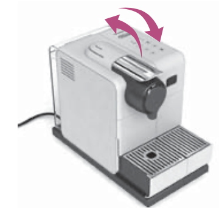
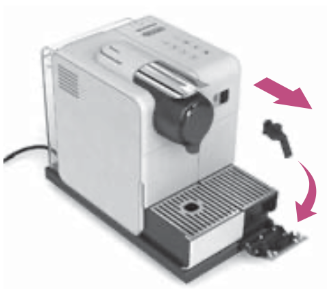
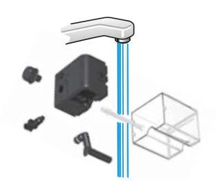
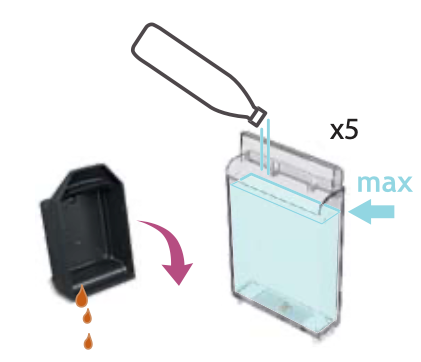
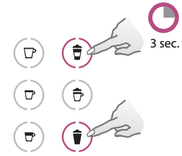
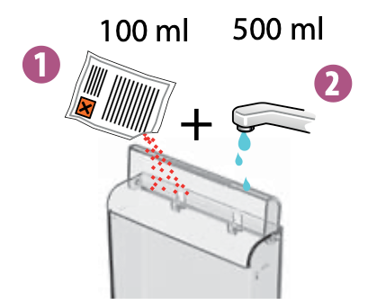
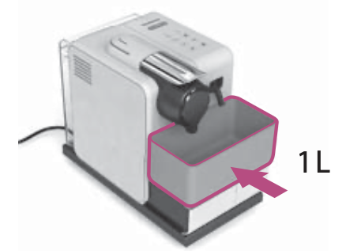
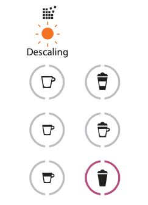
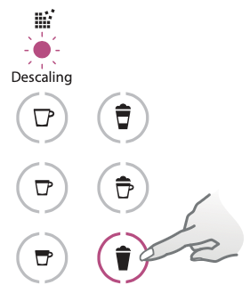

Packaging Content
- Brewmaster Forge Coffee Machine
- Tasting Box of Brewmaster OneTouch Capsules
- Forge Recipe Milk Jug
- Brewmaster Welcome Brochure
- Quick Start Guide
- Safety Booklet
- Warranty Booklet
- Water Hardness Test Strip
Specifications
| Power supply | 220-240 V, 50-60 Hz / 120-127 V, 60 Hz / 110 V, 60 Hz / 100 V, 50-60 Hz |
|---|---|
| Frequency (wireless) | 2.402-2.480 GHz, Max Transmit Power 4 dBm |
| Standby power | 0.454 W (230 V/50 Hz, EN 50564:2011) |
| Auto-off | After 2 minutes of non-use |
| Dimensions (W x D x H) | 23 cm x 33 cm x 42 cm / 9.05 x 12.9 x 16.5 in |
| Weight | 8.7 kg / 19.2 lbs |
| Water tank capacity | 2 L / 67.6 fl oz |
Machine Overview
The Brewmaster Forge is a pod-based coffee machine with an integrated steam wand for barista-style milk-based drinks.
Main components:
- A Waste Container
- B Drip Tray Grid
- C Milk Jug Recess
- D Drip Tray Separator
- E Drip Tray Float
- F Drip Tray
- G ON/OFF and Coffee Button
- H Locking / Unlocking Lever
- I Coffee Spout
- J Water Tank and Lid
- K Descaling Alert LED
- L Cleaning Alert LED
- M Milk Button (Flat White & Latte / Cappuccino / Latte Macchiato)
- N Milk Temperature Button (Low / Medium / High)
- O Steam Button
- P Steam Wand
- Q Steam Wand Cleaning Tool (located under the water tank)
- R Stainless Steel Milk Jug
- S Adjustable Cup Support
Connectivity
Benefits of Connecting Your Forge Machine
- Smart Coffee: Enjoy the latest coffee innovations from Brewmaster by always keeping your machine up to date.
- Expert Advice: Receive real-time tips thanks to step-by-step features such as descaling, rinsing and cleaning your machine via the Brewmaster Smart App.
- Machine Care: Get support and tutorials for your machine care via the Brewmaster Smart App.
By default, the Bluetooth® / Wi-Fi® is switched on. A factory reset will also switch the Bluetooth® / Wi-Fi® on.
How to Connect Your Forge Machine
- Download or update the Brewmaster Smart App. Launch the Brewmaster Smart App on your smartphone or tablet. Press the machine icon at the top right of your screen.
- Plug in the power cord and turn on the machine by pressing the Coffee Button once.
- Launch the Brewmaster Smart App. Select the machine icon. Follow the instructions via the App.
- Follow the in-app steps to pair the machine. Once connected, the Brewmaster Smart App gives access to additional customization and maintenance features.
Machine Set Up
- Rinse and dry all removable parts (drip tray, cup support, capsule container, milk jug).
- Reassemble the machine.
- Fill the water tank with fresh potable water up to the MAX line. Replace the lid.
- Properly attach the water tank to the machine.
- Plug in the power cord and turn on the machine.
- Press the Coffee Button once to complete initial setup.
Setting the Water Hardness
Setting the correct water hardness level ensures optimal descaling alerts and machine performance. A Water Hardness Test Strip is included in the box.
- Dip the water hardness strip briefly (1 second) in a container of potable water. Shake off any excess water and compare the result after 1 minute.
- Turn the machine ON. Press and hold the Milk Temperature button and the Milk Texture button simultaneously for 5 seconds to enter the water hardness setting mode.
- Set the hardness level according to the result of the test strip. Use the Milk Texture button to change the level and the Milk Temperature button to confirm.
- Press the Steam Button to save and exit.
| Hardness Setting | Water Hardness (°fH) | Water Hardness (°dH) | Water Hardness (CaCO₃) |
|---|---|---|---|
| 1 | 0 to 5 | 0 to 3 | 0 to 50 mg/L |
| 2 | >5 to 13 | >3 to 7 | >50 to 130 mg/L |
| 3 | >13 to 25 | >7 to 14 | >130 to 250 mg/L |
| 4 | >25 to 38 | >14 to 21 | >250 to 380 mg/L |
| 5 | >38 to 40 °fH | >21 to 23 | >380 to 400 mg/L |
First Use / Rinse Cycle
WARNING: Make sure no capsule is inserted into the machine during the rinsing process.
- Place a 1 L container on top of the drip tray, under the coffee spout.
- Press the Coffee Button three times within 2 seconds to start the rinse cycle.
This process will take up to 7 minutes but can be stopped at any time by pressing the Coffee Button.
- Fill the milk jug with potable water to the MAX line.
- Lift up the steam wand and insert it into the milk jug.
- Press and hold the Steam Button for 3 seconds to start the steam rinse.
- Once the cycle is complete, remove the milk jug.
- Wipe the steam wand with a clean damp cloth.
- Empty and rinse the milk jug, drip tray and container.
NOTE: Do not put any parts except the steam wand tip in the dishwasher.
Coffee Preparation
- Fill the water tank with fresh potable water to the MAX line and replace back on the machine.
- Press the Coffee Button to turn the machine ON.
- Unlock the coffee system by turning the lever to the unlock position.
- Open the coffee system. Insert a capsule. Close and lock the coffee system by turning the lever to the lock position.
- Adjust the height position of the cup support to suit your cup size.
When using a carafe, remove the cup support and drip tray.
- Place a cup of sufficient capacity under the coffee spout.
- Press the Coffee Button once to start brewing. To stop the coffee flow early, press the Coffee Button again.
CAUTION: Risk of scalding may occur due to hot coffee overflowing.
- Once coffee preparation is complete, unlock the coffee system. Open the coffee system — the capsule will be ejected. Close the coffee system.
The machine will automatically recognize the inserted capsule and select the coffee preparation parameters defined by Brewmaster coffee experts for the best extraction.
Don't forget to recycle your Brewmaster capsules. For more information, visit www.brewmaster.com/recycling
Milk-Friendly (Recipe) Extraction
For a coffee specifically optimized to pair with milk (for cappuccinos, lattes, etc.), press the Coffee Button twice (2x) instead of once. This provides a concentrated extraction ideal for milk-based recipes.
Milk Coffee Preparation
NOTE: For ideal milk froth, use semi-skimmed pasteurised milk at refrigerator temperature (4-6°C / 39-43°F).
NOTE: You can use soy, almond or oat milk. Adjust your milk settings to suit your preference.
WARNING: Plant-based beverages contain allergens (e.g. soy, almond, gluten) and should be handled carefully by persons with food allergies.
- Fill the water tank with fresh potable water. Replace back on the machine.
- Pour the milk of your choice into the milk jug. Refer to the recipe suggestions for the ideal amount. Do not exceed the MAX line.
- Lift up the steam wand and insert it into the milk jug, positioning it in the drip tray recess.
- Select the desired Milk Temperature level and Milk Texture level using the corresponding buttons.
- Press the Steam Button to start milk frothing.
- Unlock and open the coffee system.
- Insert a coffee capsule. Close and lock the coffee system.
- Adjust the height position of the cup support.
- Place a cup of sufficient capacity under the coffee spout.
- Press the Coffee Button twice (2×) for a milk-friendly extraction. To stop the coffee extraction early, press the Coffee Button again.
- Once the coffee extraction and milk texturing are complete, remove the cup and milk jug from the machine.
- The machine will automatically purge the steam wand once it returns to its downward position.
- Wipe the steam wand with a clean damp cloth.
- Pour the textured milk into the coffee.
- Unlock the coffee system. Open the coffee system — the capsule will be ejected. Close the coffee system.
NOTE: When making a latte macchiato: pour the textured milk into the glass first, then position it under the coffee spout and press the Coffee Button twice (2×) to start the extraction.
CAUTION: Risk of scalding may occur due to hot coffee overflowing.
Recipe Suggestions
Use these milk settings as a starting point for your favourite drinks. Adjust to taste.
| Cup Size | Coffee Volume | Cappuccino & Flat White | Latte Macchiato | Café Latte |
|---|---|---|---|---|
| S | 25 mL / 0.8 fl oz | Min | Level 1 | Level 1 |
| M | 40 mL / 1.3 fl oz | Level 1 | Level 2 | Level 2 |
| L | 80 mL / 2.7 fl oz | Level 2 | Max | Max |
NOTE: For Barista Series capsules, please refer to the information on the coffee sleeve.
Daily Cleaning
- Wipe the steam wand with a clean damp cloth after each use.
- Wash and rinse the milk jug, drip tray, cup support, capsule container and water tank.
- Wipe dry all parts.
- Reassemble to the machine.
Cleaning the Coffee System
Perform a coffee system cleaning cycle monthly, when you have coffee residue inside the machine, or after a long period of non-use. The Cleaning Alert LED (L) will illuminate when a cleaning cycle is required.
- Fill the water tank with fresh potable water to the MAX line. Replace back on the machine.
- Unlock and open the coffee system. Eject the used capsule. Close and lock the coffee system.
- Place a 34 fl oz / 1 L container under the coffee outlet.
- Turn the machine ON. Press the Coffee Button three times within 2 seconds to start the cleaning cycle. The cycle takes up to 7 minutes.
NOTE: The clean cycle can be interrupted at any time by pressing the Coffee Button.
- Once the process is complete, wash the drip tray and capsule container in warm water with mild detergent. Dry with a clean damp cloth.
Cleaning the Steam Wand
Clean the steam wand tip regularly to ensure consistent milk frothing performance. The Cleaning Alert LED (L) will indicate when a cleaning cycle is needed.
- Remove the pin cleaning tool from under the water tank.

- Unscrew and remove the steam wand tip from the steam wand.

- Use the steam wand cleaning tool to clear each hole in the steam wand tip. The tip can be cleaned in a dishwasher.
- Use the pin cleaning tool to remove the steam tip cap.
- Rinse and wipe the steam wand tip and the cap.
- Reassemble the steam tip and return it to the steam wand.

- Put the pin cleaning tool back on the machine under the water tank.
- Fill the milk jug to the MAX line with fresh potable water.

- Lift the steam wand and place it in the milk jug.
- Turn the machine ON. Press and hold the Steam Button for 3 seconds to start the steam wand clean cycle.

- Once the cycle is complete, lift the steam wand and remove the jug.
- Empty the milk jug. Rinse the milk jug.
WARNING: The steam wand is HOT. Do not touch the steam wand directly during or immediately after operation.
Descaling
Descaling ensures optimal machine performance and longevity. The Descaling Alert LED (K) will illuminate when descaling is required. The alert frequency depends on your water hardness setting.
TIP: Before descaling, clean the steam wand tip. Refer to the Cleaning the Steam Wand section.
NOTE: The descale and rinse cycle can be paused at any time by pressing the Steam Button. To resume, press the Steam Button again.
You will need:
- A descaling kit (available at www.brewmaster.com/descaling) — you need 2 units of Brewmaster descaling liquid
- An empty container of at least 65 fl oz / 2 L
- Turn the machine ON. Open, close, and turn the lever to the lock position.
- Empty the drip tray and the capsule container.
- Fill the water tank with potable water to the descale fill line, then add 2 units of Brewmaster descaling liquid.

CAUTION: The descaling solution can be harmful. Avoid contact with eyes, skin and surfaces.
- Replace the water tank back on the machine.
- Place at least a 65 fl oz / 2 L container under the coffee outlet.

- Press the Steam Button and the Milk Temperature button simultaneously for more than 5 seconds to begin the steam and coffee descale cycle.

- Once the steam and coffee descale cycle is complete, remove, empty and rinse the water tank, container and drip tray.
- Refill the water tank to the MAX line with fresh potable water. Reattach to the machine.
- Replace the drip tray and container.
- Press the Steam Button to resume the rinse cycle.

- Once the rinse cycle is complete, remove, empty and rinse the water tank, container and drip tray.
CAUTION: Do not use any strong or abrasive cleaning agent or solvent cleaner. Do not put the machine in a dishwasher. Never immerse the appliance or part of it in water.
Reset to Factory Settings
This will reset all reprogrammed volumes, water hardness setting, milk temperature and milk texture settings.
- Turn the machine ON. Press and hold the Milk Temperature button for 10 seconds.
- All lights will flash 5 times to indicate that the machine has been successfully reset.
Turn the Bluetooth® / Wi-Fi® On-Off
By default, the Bluetooth® / Wi-Fi® is switched on. A factory reset will also switch the Bluetooth® / Wi-Fi® on.
- Ensure the connectivity module is enabled on your smartphone.
- Unplug the machine and wait for at least 10 seconds.
- Place the lever in the unlocked position and open the coffee head.
- Press and hold the Coffee Button while plugging the machine in.
Follow the same steps to re-enable the Bluetooth® / Wi-Fi®.
Emptying the System
Empty the system before a period of non-use, for frost protection, or prior to sending the machine for repair.
- Empty the water tank. Replace back on the machine.
- Place a container under the coffee outlet.
- Turn the machine ON. Unlock the coffee system. Open it and eject the used capsule. Then close and lock the coffee system.
- Press and hold the Steam Button and the Milk Texture button simultaneously for 5 seconds. The machine will be cleared of liquid.
- Empty the container, the drip tray and the capsule container.
- The machine turns OFF automatically when completely empty.
Don't forget to recycle your Brewmaster capsules. For more information, visit www.brewmaster.com/recycling
Troubleshooting
If you experience an issue, consult the table below. For further assistance, visit www.brewmaster.com/support
| Problem | Solution |
|---|---|
| No light on buttons. | Push the Coffee Button or Steam Button to turn the machine on. Check the mains, plug, voltage, and fuse. |
| No coffee. | Descale if necessary. Check that the water tank is filled. Check that a fresh capsule is inserted correctly, that the handle is properly locked, and press the button to start. Open the machine head, eject the capsule, and perform a cleaning cycle as per the Cleaning the Coffee System section. |
| Coffee is not hot enough. | Preheat the cup with hot drinking water from the tap. Descale if necessary. |
| Machine does not start — Coffee Button light steady on. | Check that the Coffee Lever is properly locked. If brewing coffee, check that a fresh capsule is inserted correctly and the handle is locked. If cleaning, descaling or emptying, check that no capsule is inserted, then close, lock the machine and press the button to start. |
| Machine has stopped — Coffee or Steam button blinks red continuously. | Check that the water tank is filled. Fill the water tank and press the Coffee or Steam Button to restart. Descale if necessary. |
| Coffee light blinks while machine is running. | If coffee is flowing normally, this indicates the machine is working properly. If only water is flowing, the machine is executing a cleaning, descaling or emptying cycle. To exit descaling mode manually, hold the button for at least 7 seconds; then refer to the next section. If the problem persists, visit www.brewmaster.com/support |
| Coffee light blinks but machine is not running. | Wait — the machine is reading the barcode and pre-wetting the coffee. Check that a fresh capsule is correctly inserted and the handle is locked. Fill the water tank. Turn the machine to "off mode" by pushing the Coffee Button for 3 seconds, then press again to turn on. Wait approximately 20 minutes to allow the machine to cool down. If the machine does not turn off, exit descaling mode by holding the button for at least 7 seconds. |
| Machine not running — Coffee Button light shows 2 blinks then 1 pause (continuous). | During regular coffee preparation: (1) Unlock the handle and open the machine head — check a fresh, undamaged capsule is inserted correctly. (2) Check the handle is in LOCKED position. (3) Check the water tank is filled. During descaling, emptying and cleaning: (1) Check the capsule is ejected. (2) Check the handle is in LOCKED position. During volume programming: refer to the corresponding chapter. If the problem persists: (1) Unlock the handle and open the machine head. (2) Replace the capsule if needed. (3) Disconnect the power cord and plug back in after 10 seconds. (4) Close the head and press the button to turn on and start brewing. If the problem persists, visit www.brewmaster.com/support |
| Leakage or unusual coffee flow. | Check that the water tank is well positioned. |
| Machine enters standby mode. | To save energy, the machine will turn off after 2 minutes of non-use. See the Energy Saving Concept section. |
| Coffee grounds in the cup. | Perform the cleaning procedure twice. See the Cleaning the Coffee System section. |
| Coffee light on but no light on milk side. | Machine communication error. Unplug the machine, wait 10 seconds, plug it back in, wait 10 seconds, then press the Steam Button. |
| Descale Alert LED is blinking / Descale Alert LED is on and steam does not work. | The machine requires a descaling cycle to achieve optimal performance. Descale the machine. |
| Milk steam cycle does not start. | Fill the water tank. Check the water tank is correctly positioned. Check the steam tip for any blockages and ensure the wand is lowered. Check that coffee brewing is not in progress — steam can only start after coffee is finished. Check that the Descale Alert is not showing. Check that the Clean LED is not showing and requires a steam wand clean. Complete a steam wand cleaning cycle. Complete a descaling cycle if needed. |
| Quality of froth not up to standard. | Use semi-skimmed UHT or pasteurised milk at refrigerator temperature (4-6°C / 39-43°F). Use the milk jug provided and follow the levels marked. Clean both the milk jug and steam wand after each use. Clean the steam wand. Ensure the milk jug is correctly positioned in the milk jug recess. |
| Steam is very wet. | Use cold potable water. Do not use highly filtered, demineralised or distilled water. |
| Milk overflows. | Fill jug with the appropriate milk volume. To stop overflow, reduce the initial volume of milk and/or reduce the froth level. This varies depending on milk type. |
| Milk temperature is too hot. | Decrease the milk temperature setting. Use the milk jug provided. Check the milk jug is positioned correctly in the recess and on the milk jug temperature sensor. Check the temperature sensor in the drip tray is clean. |
| Milk temperature is not hot enough. | Preheat the cup. Increase the milk temperature setting. Use the milk jug provided. Check the milk jug is positioned in the recess and on the milk jug temperature sensor. Check the steam tip for blockages. |
| Clean Steam Wand Alert LED is on. | The steam wand requires cleaning to achieve optimal milk frothing performance. Follow the steps to clean the steam wand. See the Cleaning the Steam Wand section. |
Blinking Summary / Errors
The table below describes the key machine states and error conditions as indicated by the button and LED lights.
| Indication | Description |
|---|---|
| Power Off | All lights off. |
| Heat-up mode (coffee) | Coffee button and steam button are pulsing. |
| Ready mode | Coffee button and steam button are solid on. |
| Brewing mode | Coffee button pulsing. |
| Recipe Brewing mode (2× press) | Coffee button pulsing (milk-friendly extraction active). |
| Steaming mode | Coffee button on; Steam button pulsing. |
| Pre-order Brew | Coffee and steam buttons pulsing (coffee pre-ordered while steaming). |
| Steam auto purge ready mode | Coffee and steam buttons on; Cleaning Alert LED lit orange. |
| Steam auto purge mode | Coffee button on; Steam button and Cleaning Alert LED pulsing orange. |
| Standby mode | All lights off (auto-off after 2 minutes of non-use). |
| Milk communication error | Coffee button on only. |
| Coffee error | Coffee button flashes 2× rapidly then pauses. |
| Coffee overheat | Coffee button red/orange; Steam button on. |
| Milk overheat | Coffee button on; Steam button orange. |
| User error | Coffee button flashing; Steam button on. |
| Water tank empty — during coffee | Coffee button pulsing only. |
| Water tank empty — during milk | Steam button pulsing orange only. |
| Descale warning | Coffee and steam buttons on; Descale Alert LED blinking orange. |
| Descale lockout | Coffee button on; Steam button orange; Descale Alert LED solid orange. |
| Steam wand blocked | Coffee button on; Steam button orange; Cleaning Alert LED solid orange. |
| Cleaning cycle needed | Coffee button pulsing orange; Cleaning Alert LED solid orange. |
Energy Saving Concept
The machine can be turned off at any time (when not operating) by removing the plug from the power outlet.
Automatic off mode: the machine will turn off automatically after 2 minutes of non-use.
NOTE: In special cases, the machine can take up to 5 minutes to automatically turn off.
Support & Disposal
Support
Should you need any additional information, have a problem, or simply want to seek advice, please visit www.brewmaster.com/support
Disposal and Environmental Protection
Your appliance contains valuable materials that can be recovered or recycled. Separation of the remaining waste materials into different types facilitates the recycling of valuable raw materials. Leave the appliance at a collection point. You can obtain information on disposal from your local authorities.
To learn more about Brewmaster's sustainability strategy, visit www.brewmaster.com/sustainability